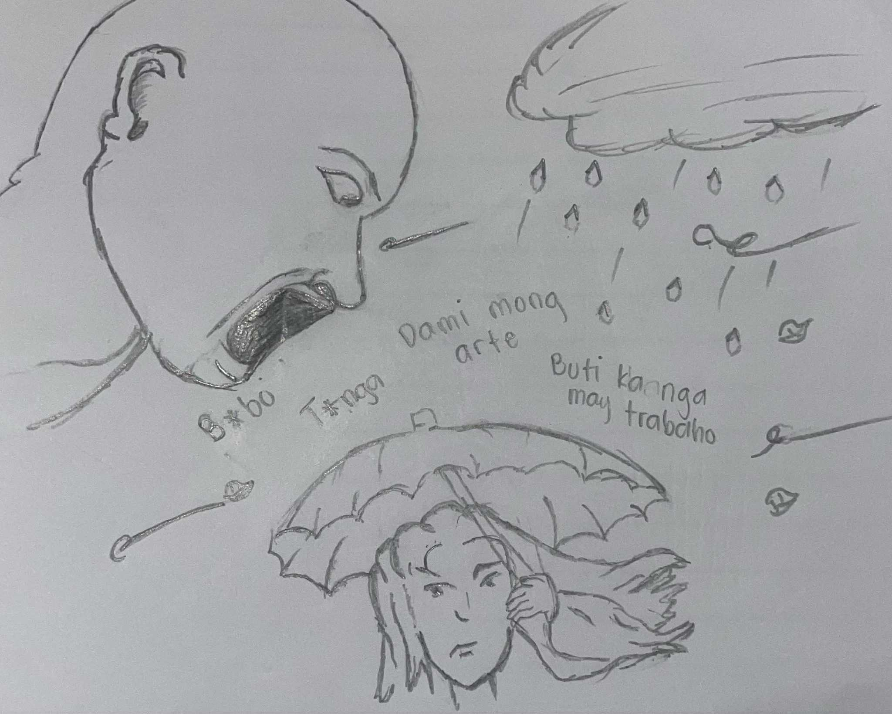

Bagyong Crising nakalabas na ng Philippine Area of Responsibility(PAR) habang lumakas naman ito at isa nang ganap na Sever Tropical Storm.
Ayon sa Pag-ASA 10:00 ng umaga noong sabado, Hulyo 19, 2025, nasa labas na ng PAR ang Bagyong Crising. Huli namang namataan ang sentro ng bagyo sa 235 kilometro ng kanluran ng Itbayat, Batanes. May taglay itong malakas na hangin na aabot sa 100 kilometro kada oras at bugsong papalo sa 125 kilometro kada oras.
May mga ulat mula sa iba't-ibang labasan ng balita, kabilang ang GMA at ABS-CBN ay nagdetalye ng malaking pagkawala ng buhay. Iba-iba ang bilang ng mga nasawi sa mga unang ulat, ngunit ang huling bilang mula sa NDRRMC ay umabot na sa hindi bababa sa 30, na may karagdagang nawawala at mga sugatan. Libo-libong pamilya ang nawalan ng tirahan, naghahanap ng kanlungan dulot ng bagyo. Binaha ng malawakang pagbaha ang mga tahanan at imprastraktura, na nagduloy ng malawakang pinsala.
Nakaranas naman ng malaking pagkalugi ang sektor ng Agrikultura, malaki ang epekto ang pagbaha sa industriya ng Bangus ng Pangasinan na nagdulot ng malaking pasanin sa mga produsyer. Sa kabuuan, lumampas na sa 1.1 Bilyon ang kabuuang pagkalugi sa Agrikultura ang pinsala dulot ng bagyo sa mga imprastraktura, tulad ng kalsada at tulay ay dumagdag pa sa ekonomikong pasanin. Tinatayang nasa 5 Bilyon na ang kabuuang pinsala ng mga imprastraktura dulot ng Bagyong Crising, pati na rin sa ibang sistemang pangpanahon.
Umangarangkada na ang iba't ibang ahensya ng pamahalaan, kabilang ang National Disaster Risk Reduction and Management Council (NDRRMC) at mga lokal na pamahalaan, ay agad na nagpakilos ng mga tauhan at rekurso upang maisagawa ang mga operasyon ng pagsagip, pamamahagi ng ayuda, at pagbibigay ng tulong pinansyal sa mga naapektadong mamamayan. Bahagi ng kanilang aksyon ang paglikha ng mga evacuation center, pamimigay ng relief goods tulad ng pagkain, tubig, gamot, at iba pang pangunahing pangangailangan.
Dahil sa lawak at tindi ng pinsalang idinulot ng kalamidad, maraming lugar ang nagdeklara ng state of calamity upang mapabilis ang pagbibigay ng tulong at pagsisimula ng rehabilitasyon. Sa kabila nito, nananatiling isang malaking hamon ang pagharap sa mga epekto ng sakuna, lalo na sa mga lugar na matinding sinalanta.
Nagpahayag na ang Lungsod ng Marikina ng intensyong magdeklara ng state of calamity dahil sa matinding epekto ng bagyong Crising at ng habagat, na parehong nagdulot ng pagbaha at pagkasira ng mga ari-arian. Gayundin, ang lalawigan ng Laguna ay nagdeklara rin ng state of calamity bunsod ng malawakang pagbaha na nakaapekto sa libo-libong residente at nagsanhi ng malawakang pagkasira ng mga kabuhayan at imprastruktura.
Sa kabila ng mga pagsusumikap ng gobyerno, patuloy pa ring kinakaharap ng mga apektadong komunidad ang mabibigat na pagsubok sa kanilang pagbangon mula sa trahedya.
Pagpapalawak ng Kaalaman at Pagpapakita ng Talento (Hulyo 29, 2025)
Isang paaralan ang nagsagawa ng pagtitipon ng mga mamamahayag kung saan mahahasa ang iyong talento. Ito ay ginanap sa Mataas na paaralan ng Peñaranda, Hulyo 29, 2025. Hindi inaasahang ng paaralan ang pagsali ng maraming estudyante na gustong ipakita ang kanilang mga talento.
Maraming estudyante ang nakilahok ang handang ipakita ang kanilang talento at galing sa iba't-ibang kategorya. Ginagawa ang gawaing ito sa paaralan upang magbigay ng oportunidad sa mga estudyante upang hasain at palawakin ang kanilang mga isipan. Ang ganitong klaseng kaganapan ay hindi lamang nagsisilbing pagpapahayag ng mga bagong proyekto, kundi isang mahalagang pagkakataon para sa mga estudyante na mahasa at mapaunlad pa lalo ang kanilang mga talento.
Ito'y nagbigay ng inspirasyon sa mga estudyante na magpatuloy sa kanilang mga pangarap at magsikap upang maging future Leaders at change makers. Sa mga susunod na presscon, inaasahan ng paaralan na mas marami pang mga estudyante ang makikilahok sa naturang programa.
SONA 2025: Ferdinand Marcos Jr.
3:30 ng hapon,Hulyo,28,2025, Dumating si Pangulong Ferdinand Marcos Jr. sa Batasang Pambansa saksi ang presidential chopper para sa kanyang SONA. Siya ay malugod na tinanggap ng mga mambabatas at opisyal ng gobyerno habang pumasok sa Plenary Hall.
Nangako si Pangulong Marcos na magiging mas mabilis at mas epektibo ang gobyerno sa susunod na tatlong taon ng kanyang pamumuno, binigyang-diin na bagaman ang mga positibong indikasyon ng ekonomiya tulad ng pagtaas ng kumpiyansa sa negosyo, pagbaba ng inflation, at pagtaas ng empleyo ay mahahalaga, walang saysay ito kung ang mga ordinaryong Pilipino ay patuloy na maghihirap.
Aniya, habang papalapit na ang pagtatapos ng kanyang termino, maglalaan siya ng higit pang pagsisikap upang mapabuti ang kalagayan ng mga mamamayang Filipino.
Hinimok din niya ang lahat na magkaisa at kalimutan ang pagkakaiba, upang magsanib-puwersa bilang mga Filipino na tapat sa paglilingkod sa bayan.
Ipinangako ni Marcos na patuloy na makikipagtulungan ang Kagawaran ng Pagtatrabaho at Empleo (DOLE), Kagawaran ng Kalakalan at Industriya (DTI), at Kagawaran ng Kagalingan at Pagpapaunlad ng Lipunan (DSWD) upang lumikha ng mga oportunidad sa trabaho at kabuhayan para sa mga Pilipino. Sinabi niyang ang mga pagkakataon sa trabaho sa bansa ay patuloy na lumalaki, at itutuloy niya ang mga pagsisikap upang matulungan ang mga hindi pa nakatatagpo ng trabaho.
Ipinagdiinan ni Marcos na patuloy na susuportahan ng kanyang administrasyon ang mga maliliit na negosyo sa pamamagitan ng mga pautang na may mababang interes at walang kalateral. Magkakaroon din ng libreng pagsasanay at pondo upang matulungan ang mga pook na mahihirap na makapagtayo ng kanilang mga mikro-negosyo. Inilahad niyang layunin ng administrasyon na tulungan ang humigit-kumulang 2.5 milyong pook na may mababang kita.
“Handa na ang Pilipinas. Mamuhunan sa mga Filipino.” dagdag pa nito.
Ipinahayag ni Marcos na napatunayan ng gobyerno na maaaring mag-alok ng bigas sa halagang P20 kada kilo nang hindi malulugi ang mga magsasaka. Aniya, nailunsad na ang programang ito sa ilang mga lugar sa Luzon, Visayas, at Mindanao, kabilang na ang San Juan, Pangasinan, Cavite, Occidental Mindoro, Cebu, Bacolod, Guimaras, Siquijor, at Davao del Sur.
Sinabi rin niyang sa pamamagitan ng P113 bilyong inilaan para palakasin ang mga programa ng Kagawaran ng Agrikultura, ipagpapatuloy ang distribusyon ng P20 bigas sa buong bansa sa pamamagitan ng mga Kadiwa store at mga sentro na may pakikipagtulungan sa mga lokal na pamahalaan.
Nagbabala si Marcos sa mga nagnenegosyo ng bigas na huwag manipulahin ang presyo ng palay at bigas, o magsagawa ng pandaraya, at itinuring niyang isang anyo ng ekonomikong panlilinlangang ang mga ganitong hakbang. Aniya, ang mga mapapatunayang nagkasala ay haharap sa mga kasong legal.
Sinabi ni Marcos na sa pagpasok niya sa ikalawang kalahati ng kanyang termino, hinikayat niya ang mga Pilipino na manatiling nakatuon sa landas ng kaunlaran, na nakaugat sa tunay na pagkamakabayan at matitibay na pagpapahalagang Pilipino — ang tapang, sipag, at malasakit.
Tinapos niya ang kanyang talumpati sa mga salitang: “Tayo ito. Tayo ang Bagong Pilipino.”
Feature Article
Tungkulin Bago Kita
“B*bo. P*tang *na ang inabot.”
Hindi ito eksena mula sa pelikula, kundi isang tunay na komentong tinanggap ni Bernadette Reyes, isang beteranong mamamahayag, matapos ang isang post tungkol sa kanyang pagganap sa tungkulin sa gitna ng bagyo. Sa halip na pagkilala sa kanyang sakripisyo, pambabastos ang kanyang sinalubong.
Ngunit sa halip na magalit, pinili niyang manindigan. Tahimik, mahinahon, at may dignidad. Hindi para ipagtanggol ang sarili, kundi para ipagtanggol ang propesyon—at ang prinsipyo.
Mas Malaki ang Pananagutan Kaysa Sweldo
Sa mga panahong sumasahod pa lamang siya ng 13,000 pesos, may mga alok na trabaho kay Bernadette na tatlong beses ang laki ng kita—mula sa mundo ng finance, hanggang sa DFA kung saan siya ay nakapasa bilang isang Foreign Service Officer.
Sunod-sunod ang pintuan ng oportunidad, mga trabahong mas komportable, mas ligtas, at mas pinapahalagahan ng lipunan. Ngunit bawat isa, kanyang tinanggihan. Dahil para sa kanya, ang trabaho ay hindi lang paraan ng kabuhayan. Isa itong panata.
“Ito ang trabahong hindi ko ikayayaman. Pero mayaman ako sa aral ng buhay.” Sa loob ng mahigit dalawampung taon, pinili niya ang mundo ng balita—ang mundong hindi mo alam kung kailan ka kakain, kung saan ka matutulog, at kung ligtas kang uuwi. Ngunit ito rin ang mundong nagtuturo ng malasakit, ng katatagan, ng tunay na serbisyo.

Basang-Basa, Pero Matatag
Habang ang iba'y nasa loob ng bahay, siya’y nasa kalsada—nakapayong, nababasa ng ulan, kumakain ng baha, naghahatid ng balita. Walang script. Walang teleprompter. Isang mikropono at isang hangarin lang ang kanyang sandata: ang magbigay ng impormasyon sa gitna ng peligro.
Ngunit minsan, kahit ang pinakamalinaw na layunin ay hindi naiintindihan ng lahat. Isang larawan ng kanyang coverage ang na-edit at pinalabas na tila siya’y nagrereklamo. Mabilis ang pagkalat. Mas mabilis ang paghusga.
“Kahit malinaw ang mensahe ng pagmamalasakit, ginawan ng ibang kwento. Sa halip na simpatiya, batikos ang dumating.”
Hindi madali ang makabasa ng murang nakapanglalait. Ngunit sa halip na makipagsabayan, pinili ni Bernadette ang katahimikan. Isang bukas-palad na pahayag ng pang-unawa, at isang pusong marunong magpatawad.
“Hindi po ako nagtanim ng sama ng loob. Nauunawaan ko na minsan, ang masakit na salita ay nagmumula rin sa masakit na pinagdadaanan.”
Ang taong nagkamali ay humingi ng paumanhin. At sa mata ni Bernadette, sapat na iyon. Dahil para sa kanya, ang pagkakamali ay bahagi ng pagiging tao. At ang pagpapakumbaba ay higit na mahalaga kaysa pagiging tama.
Hindi lahat ng bayani ay nasa entablado. May ilan na nasa kalsada—nag-uulat habang umuulan, habang binabayo ng hangin, habang binabatikos online. Isa si Bernadette Reyes sa mga piniling itaya ang sarili, hindi para sa spotlight, kundi para sa bayan.
Hindi niya piniling maging mamamahayag para yumaman. Pinili niya ito dahil alam niyang may mga kwentong kailangang marinig, may katotohanang kailangang ihayag, at may mga kababayang kailangang maprotektahan sa pamamagitan ng impormasyon.
Sa panahong madali ang manghusga, sana’y piliin nating unawain. Sa panahong uso ang mag-viral, sana’y piliin nating maging totoo. At sa panahong ang dangal ay tila palitan na ng likes, sana’y maalala pa rin natin na may mga gaya ni Bernadette Reyes na ang paninindigan ay hindi nakadepende sa kita, kundi sa layunin.
"Patuloy akong magsisilbi sa bayan. Uulit-ulitin, para sa bayan."
Tinig, Mukha ng Lakas ng Babae
Sa mundo ng balita na kadalasang pinangungunahan ng mga lalaki, tumatayo si Bernadette Reyes bilang isang patunay na ang lakas, talino, at prinsipyo ay hindi nasusukat sa kasarian. Hindi siya sumisigaw para marinig, hindi siya naghahanap ng spotlight para mapansin. Ngunit sa bawat ulat niya sa gitna ng unos, sa bawat tanong niya sa mga makapangyarihan, at sa bawat tahimik niyang paninindigan, unti-unti siyang naging tinig ng katotohanan—at mukha ng isang matatag na babae.
Babae, Mamamahayag, Mandirigma
Hindi lang basta-basta reporter si Bernadette. Isa siyang tagapaghatid ng balita na may malalim na pag-unawa sa pulso ng masa. Hindi niya tinitingnan ang balita bilang trabaho lang—ito’y kanyang misyon. Mula sa pagbaha, lindol, kaguluhan, hanggang sa maliliit na istoryang may malalaking aral—naroroon siya.
At sa likod ng kamera, isa rin siyang ina, kapatid, kaibigan. May mga araw na walang pahinga, may mga gabing walang tulog. Ngunit hindi siya kailanman nagreklamo. “Kaya ko ’to,” aniya minsan, “hindi dahil babae lang ako—kundi dahil isa akong Pilipinang may layunin.”
Paninindigan sa Panahong Tahimik ang Marami
Minsan, mas madali na lang ang manahimik. Iwas sa gulo. Iwas sa puna. Ngunit si Bernadette, kahit hindi palaging nagsasalita, laging may ipinaglalaban. Mula sa maayos na pagbabalita, hanggang sa pagbibigay ng boses sa mga hindi pinapakinggan, hindi siya natitinag.
Noong siya’y binatikos online, hindi niya tinugon ng galit. Tumugon siya ng malasakit. Hindi para magpaawa, kundi para magpakita ng mas mataas na antas ng pagkatao. Iyan ang totoong lakas ng babae—hindi ang malakas ang boses, kundi ang may tibay ng loob kahit tahimik.
Inspirasyon sa Kabataan, Lalo na sa Kababaihan
Maraming kabataang babae ngayon ang nangangarap maging mamamahayag. Hindi nila gustong sumikat—gusto nilang marinig, maunawaan, makapaglingkod. At isa si Bernadette sa mga nagbukas ng pintuan para sa kanila.
Hindi niya kailangan ng korona para matawag na reyna. Ang kanyang kredibilidad, etika, at katapatan sa propesyon ang nagsisilbing korona niya. Hindi niya kailangan ng “trending moment” para maging relevant. Ang kanyang konsistensiya ang siyang nagpapatunay ng kanyang halaga.
Sa panahong ang imahe ng kababaihan ay minsang nililimitahan sa ganda, sa likes, o sa viral moments—naroon si Bernadette Reyes, isang tahimik ngunit makapangyarihang paalala: ang ganda ay hindi lamang sa anyo, kundi sa tapang. Ang lakas ay hindi lamang sa sigaw, kundi sa prinsipyo.
Sa bawat batang babaeng nangangarap maging mamamahayag, sana’y makita nila si Bernadette at masabi: “Kaya ko rin.”
At sa bawat Pilipinong nanonood ng balita sa gitna ng unos, sana’y maalala nila na may isang Bernadette Reyes na hindi natatakot tumindig, kahit basang-basa, kahit binabatikos—basta't ang totoo'y maipahayag, at ang bayan ay mapaglingkuran.
"Ang kababaihan ay hindi lang dapat kinikilala sa araw ng selebrasyon. Dapat silang pakinggan, sa bawat araw ng katotohanan."
Sports Article
Pacquiao vs Barrios: Laban ng Tapang, Nauwi sa Tabla
Isang matinding laban na tinaguriang “Fight of the century” ni Manny Pacquiao Vs Mario Barrios na ginanap noong Sabado, Hulyo 10, 2025 - MGM Grand Garden Arena, Las Vegas, NV.
Tinangkang basagin ni Pacquiao ang sarili niyang rekord bilang pinakamatandang kampeon sa welterweight sa kasaysayan ng boksing, ngunit kinapos siya nang bahagya matapos maghatol ang dalawang hurado ng tabla, 114-114, at isang hurado na nagbigay ng iskor na 115-113 na pabor kay Marrio Barrios.
Posibleng umabot sa $17 million to $20 million o P979.8 million hanggang P1.1 billion ang maaaring kitain ni Manny Pacquiao sa laban nila ni Mario Barrios.
Kahit hindi nasungkit ni Pacman ang WBC welterweight title laban kay Mario Barrios, pak na pak naman ang perang maiuuwi niya sa Pilipinas sa pagbabalik niya sa boxing ring pagtapos ng apat na taon.
"Akala ko ako ang nanalo" wika ni Pacquiao (62-8-3, 39 KOs). "Malapit ang laban. Matibay siya. Nagtrabaho ako nang mabuti at nanatiling disiplinado. Lagi kong inaalagaan ang katawan ko para makalaban pa ako."
"Isang karangalan ang makasama siya sa ring." wika ni Barrios (29-2-2, 18 KOs). "Ito na ang pinakamalaking laban ko sa buong karera at ibinuhos namin lahat sa laban. Wala akong nararamdaman kundi respeto para kay Manny."
Ipinakita ng CompuBox stats kung gaano ka-dikit ang laban, kung saan nakalamang si Pacquiao sa power punches, 81-75, habang si Barrios naman ay naka-45 jabs kumpara sa 20 ni Pacquiao. Nakatayo ang buong crowd sa bawat suntok na tinatamaan, at ipinakita ni Pacquiao sa mga unang round na mas mahusay siyang mandirigma ngayon kaysa noong huli siyang lumaban noong 2021.
"Grabe ang stamina niya" ani Barrios. "Malakas pa rin siya at ang timing niya, ang galing pa rin. Mahirap pa rin siyang basahin sa ring."
Sa ikawalong round, nagkaroon ng pinakamalaking sandali si Pacquiao sa laban nang pasabugin niya ang arena gamit ang sunod-sunod na malalakas na left hook bago tumunog ang bell. Tila nasa panig na niya ang momentum, ngunit hinugot ni Barrios ang natitirang lakas at naipanalo ang huling tatlong round sa lahat ng scorecards ng hurado, dahilan upang mauwi ang laban sa tabla at mapanatili ang kanyang titulo.
"Kailangan ko sanang tapusin ang laban nang mas malakas, pero napakatibay ng kalaban ko," ani Pacquiao. "Magaganda ang mga kombinasyon niya at magaling ang depensa. Isa itong mahirap na laban."
"Hindi ko naramdaman na nawawala na sa akin ang laban, pero alam kong kailangan kong bumawi para tiyaking mananalo ako," ani Barrios. "Ang plano ay idiin siya at iparamdam sa kanya ang edad niya. Pero ang lakas pa rin ng mga binti niya."
Natapos ang laban sa iskor na 114-114, 114-114, 115-113, na pabor kay Barrios, ngunit na uwi ang laban sa isang tabla.
Kapwa nagpahayag ang dalawang boksingero ng interes sa isang posibleng rematch para sa kampeonato.
"Kailangan kong mas pahabain pa ang training ko para sa isang championship fight." wika ni Pacquiao. "Dahil sa eleksyon, nahuli ang pagsisimula ko, pero ayos lang. Siyempre gusto ko ng rematch. Gusto kong mag-iwan ng pamana at ipagmalaki ako ng sambayanang Pilipino."
"Game ako sa rematch." ani Barrios. "Siyempre. Malaking laban ito para sa boksing. Gusto kong mangyari ito ulit."
Editorial Article
Ang Pinakaunang Bagong Batas ni Sen. Robin Padilla
Sen. Robin Padilla, naghain ng panukalang batas noong Hulyo 17, 2025, para ibaba ang edad ng kriminal na pananagutan sa edad na 10 gulang para sa mga menor de edad na sangkot sa di kaaya ayang krimen.
Inihandog ni Senador Robin Padilla ang panukalang batas na naglalayong ibaba ang pinakamababa edad sa kriminal na pananagutan para sa mga menor de edad na nasangkot sa mga karumal-dumal na krimen.
Sa ilalim ng pinaukala niyang batas, ang mga batang may edad 10 hanggang 17 taong gulang ay maaari na ngayong kasuhan at makulong ng higit pa sa labing dalawang taon sa Bilangguan, kung mapapatunayang sangkot sila sa mga lubhang krimen tulad ng pagpatay, pagnakaw, pang gagahasa, pag gamit ng mga droga o pinagbabawal na gamot at ang mga nasasakdal.
"Hindi na dapat itinuturing ang mga bata bilang isang inosente, lalo na sa panahon ngayon marami sa kanila ang nalulong sa sosyal medya na naaapektuhan ang kanilang pag iisip sa mga nakikita nila sa internet marami sa kanila na isinasagawa nila sa kanilang sarili ang mga nalalagap nila na di kaaya aya sa social media" wika ni Sen. Robin padilla.
Sa pahayag ni Padilla, malinaw na ang layunin ng batas ay hindi para parusahan ang mga bata, kundi ang protektahan at bigyan ng payo ang mga kabataan tungkol sa kanilang mga responsibilidad. Ito ay isang hakbang tungo sa paghubog ng mga kabataan na may malasakit sa kapwa at may pagmamahal sa bayan.
Umani ng madaming reaksyon ang mga publiko sa inilantad na batas ni Sen. Robin Padilla, maraming nag sasabi na maganda ang naisagawa ni Sen. robin Padilla na batas, dahil Maraming menor de edad na nagsasagawa ng ibat ibang kremen, para sila rin ay maturuan ng leksyon, meron ding nag sasabi na hindi maganda ang naisagawa niyang batas, dahil pano naman ang iba na hindi sinasadya o kaya walang entensyon na gawin ito.